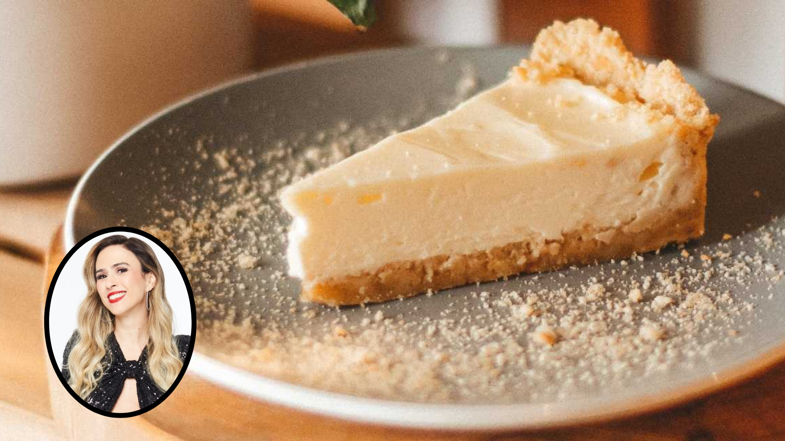

Torta de Ricota com Tata Wernerck

Ingredientes
- 4 ovos
- 1 lata de leite
- 1 colher de margarina
- 1 colher e 1/2 de maisena
- 1/2 xícara de açúcar
- 300 g de ricota
Modo de Preparo
- Separe as claras e reserve
- Bater no liquidificador as gemas, o leite condensado, o leite, a ricota, a margarina, o açúcar e a maisena.
- Bater as claras até obter o ponto de neve e misture com a ajuda de uma espátula com o creme obtido no liquidificador.
- Assar em forno médio (180º graus à 200º graus).
- Sirva-o frio e para que fica ainda mais gostoso, acompanhe-o com geléia de uva, fica uma delícia.